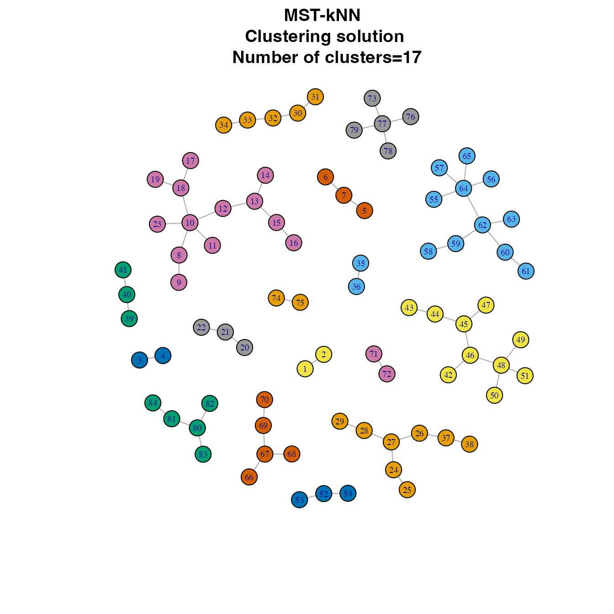

A quick guide of mstknnclust package
Mario Inostroza-Ponta (mario.inostroza@usach.cl), Jorge Parraga-Alava (jorge.parraga@usach.cl), Pablo Moscato (pablo.moscato@newcastle.edu.au)
11 May 2026
Source:vignettes/guide.Rmd
guide.RmdIntroduction
Clustering is a common data mining task commonly used to reveal structures hidden in large data sets. The clustering problem consists of finding groups of objects, such that objects that are in the same group are similar and objects in different groups are dissimilar. Clustering algorithms can be classified according to different parameters. One particular type of algorithms that can be distinguished is the graph-based clustering. In the graph-based clustering algorithms, the data set can be modeled as a graph. In such a graph, a node represents an object of the data set, an edge a link between pairs of nodes. Each edge has a costs that corresponds to the distance between two nodes, calculated using a chosen distance measure.
One of the clustering algorithms within the graph-based approach is the MST-kNN (Inostroza-Ponta 2008). It uses two proximity graphs: minimum spanning tree (MST) and k nearest neighbor (kNN). They can model the data and highlight the more important relationships between the objects of the data. MST-kNN requires minimal user intervention due to the automatic selection of the number of clusters. Such a situation is adequate in scenarios where the structure of the data is unknown.
This document gives a quick guide of the mstknnclust
package (version 0.3.1). It corresponds to the implementation of the
MST-kNN clustering algorithm. For further details to see
help(package="mstknnclust"). If you use this R package do
not forget to include the references provided by
citation("mstknnclust").
How does MST-kNN clustering works?
The MST-kNN clustering algorithm is based on the intersection of the edges of two proximity graphs: MST and kNN. The intersection operation conserves only those edges between two nodes that are reciprocal in both proximity graphs. After the first application of the algorithm, a graph with one or more connected components (cc) is generated. MST-kNN algorithm is recursively applied in each component until the number of cc obtained is one.
The algorithm requires a distance matrix d as input containing the distance between n objects. Then, the next steps are performed:
- Computes a complete graph (CG) that represents the data, with one node per object, one edge for each pair of objects, and the cost of the edge equal to the distance between the objects obtained from distance matrix d.
- Computes the MST graph through Prim’s algorithm (Prim 1957) and using the complete graph as input.
- Computes the kNN graph using the complete graph as input and determining the value of k according to:
- Performs the intersection of the edges of the MST and kNN graphs. It will produce a graph with connected components
- Evaluates the numbers of connected components (cc) in the graph produced. If the algorithm stops. If , the steps 1-4 are recursively applied in each of the connected components of the graph.
- Finally, when the algorithm stops in step 5 in any recursion, it performs the union of the graphs produced by the application of the MST-kNN algorithm in each recursion.
Installation instructions
The mstknnclust package requires
igraph package to work and to visualize some graphs as
networks. This package is included as a mandatory dependency, so users
who install the mstknnclust package will have them automatically. To
install the mstknnclust package use
install.packages("mstknnclust").
Example on Indo-European languages data set
Load package
#loads package
library("mstknnclust")Load example data
#loads dataset
data(dslanguages)| IrishA | IrishB | WelshN | WelshC | BretonList | BretonSE | |
|---|---|---|---|---|---|---|
| IrishA | 0.000000 | 0.001211 | 0.002907 | 0.002924 | 0.003215 | 0.003236 |
| IrishB | 0.001211 | 0.000000 | 0.002817 | 0.002778 | 0.002985 | 0.003115 |
| WelshN | 0.002907 | 0.002817 | 0.000000 | 0.001065 | 0.001565 | 0.001590 |
| WelshC | 0.002924 | 0.002778 | 0.001065 | 0.000000 | 0.001626 | 0.001639 |
| BretonList | 0.003215 | 0.002985 | 0.001565 | 0.001626 | 0.000000 | 0.001126 |
| BretonSE | 0.003236 | 0.003115 | 0.001590 | 0.001639 | 0.001126 | 0.000000 |
Performing MST-kNN clustering algorithm
#Performs MST-kNN clustering using languagesds distance matrix
results <- mst.knn(dslanguages)Getting the results
The function mst.knn returns a list with the
elements:
- cnumber: A numeric value representing the number of clusters of the solution.
- cluster: A named vector of integers from 1:cnumber representing the cluster to which each object is assigned.
- partition: A partition matrix order by cluster where are shown the objects and the cluster where they are assigned.
- csize: A vector with the cardinality of each cluster in the solution.
- network: An object of class “igraph” as a network representing the clustering solution.
## Number of clusters:## Objects by cluster: 8 11 5 2 2 3 13 3 5 2 3 10 3 5 2 5 2## Named vector of cluster allocation:## IrishA IrishB WelshN WelshC BretonList
## 4 4 5 5 6
## BretonSE BretonST RumanianList Vlach Italian
## 6 6 7 7 7
## Ladin Provencal French Walloon FrenchCreoleC
## 7 7 7 7 7
## FrenchCreoleD SardinianN SardinianL SardinianC Spanish
## 7 7 7 7 8
## PortugueseST Brazilian Catalan GermanST PennDutch
## 8 8 7 1 1
## DutchList Afrikaans Flemish Frisian SwedishUp
## 1 1 1 1 9
## SwedishVL SwedishList Danish Riksmal IcelandicST
## 9 9 9 9 10
## Faroese EnglishST Takitaki LithuanianO LithuanianST
## 10 1 1 11 11
## Latvian Slovenian LusatianL LusatianU Czech
## 11 12 12 12 12
## Slovak CzechE Ukrainian Byelorussian Polish
## 12 12 12 12 12
## Russian Macedonian Bulgarian Serbocroatian GypsyGk
## 12 13 13 13 2
## Singhalese Kashmiri Marathi Gujarati PanjabiST
## 2 2 2 2 2
## Lahnda Hindi Bengali NepaliList Khaskura
## 2 2 2 2 2
## GreekML GreekMD GreekMod GreekD GreekK
## 14 14 14 14 14
## ArmenianMod ArmenianList Ossetic Afghan Waziri
## 15 15 16 17 17
## PersianList Tadzik Baluchi Wakhi AlbanianT
## 16 16 16 16 3
## AlbanianTop AlbanianG AlbanianK AlbanianC
## 3 3 3 3## Data matrix partition (partial):| object | cluster |
|---|---|
| GreekK | 14 |
| ArmenianMod | 15 |
| ArmenianList | 15 |
| Ossetic | 16 |
| PersianList | 16 |
| Tadzik | 16 |
| Baluchi | 16 |
| Wakhi | 16 |
| Afghan | 17 |
| Waziri | 17 |
Visualizing clustering
The clustering solutions can be shown as a network where clusters are identified by colors. To perform the visualization we need the R package igraph (Csardi and Nepusz 2006).
##
## Attaching package: 'igraph'## The following objects are masked from 'package:stats':
##
## decompose, spectrum## The following object is masked from 'package:base':
##
## union
igraph::V(results$network)$label.cex <- seq(0.6,0.6,length.out=vcount(results$network))
plot(results$network, vertex.size=8,
vertex.color=igraph::clusters(results$network)$membership,
layout=igraph::layout.fruchterman.reingold(results$network, niter=10000),
main=paste("MST-kNN \n Clustering solution \n Number of clusters=",results$cnumber,sep="" ))## Warning: `clusters()` was deprecated in igraph 2.0.0.
## ℹ Please use `components()` instead.
## This warning is displayed once per session.
## Call `lifecycle::last_lifecycle_warnings()` to see where this warning was
## generated.## Warning: `layout.fruchterman.reingold()` was deprecated in igraph 2.1.0.
## ℹ Please use `layout_with_fr()` instead.
## This warning is displayed once per session.
## Call `lifecycle::last_lifecycle_warnings()` to see where this warning was
## generated.